Table of Contents
- Introduction
- Installation
- Common Workflow
- Further Reading
- Contact
- Session Information
1. Introduction
markeR is an R package designed to provide a modular, flexible framework for evaluating gene sets as phenotypic markers using transcriptomic data. It supports researchers in both quantitative analysis and visual exploration of gene set behaviour across experimental or clinical phenotypes.
In this vignette, we will illustrate markeR functionalities using a pre-processed gene expression dataset and metadata derived from the Marthandan et al. (2016) study (GSE63577). This dataset contains human fibroblast samples cultured under two conditions: replicative senescence and proliferative control.
1.1. Primary Objectives
The primary objectives of markeR are to:
- Facilitate reproducible and standardized quantification of gene set activity.
- Provide flexible options for both score-based and enrichment-based analyses.
- Enable comparison of user-defined signatures against reference gene sets (e.g., MSigDB) for biological interpretation.
- Offer modular visualization and evaluation tools to explore gene set behaviour at both the set and individual gene level.
1.2. Features and Capabilities
The package integrates multiple approaches for characterizing phenotypes:
- Score-based methods: log2-median, ranking, and single-sample GSEA (ssGSEA) to quantify the coordinated expression of genes in a set.
- Enrichment-based methods: GSEA using moderated t- or B-statistics, with options to handle unidirectional and bidirectional gene sets.
- Gene-level exploration: expression heatmaps, violin plots, ROC curves, AUC calculations, effect size measures, and PCA analysis to assess individual gene contributions.
markeR supports two primary usage modes:
- Benchmarking mode: Evaluate multiple gene sets across multiple phenotypic variables, integrating both score- and enrichment-based analyses, visualizations, and null distribution comparisons.
- Discovery mode: Focus on a single, well-characterized gene set for hypothesis generation and exploration of associations with phenotypic variables.
The package is designed to be fully customizable, supporting diverse
visualization strategies via ggplot2,
ComplexHeatmap, ggpubr, cowplot,
and grid. Its modular structure allows easy integration of
new functionalities while providing a robust framework for reproducible,
standardized phenotypic characterization of gene sets.
2. Installation
Install the latest release from Bioconductor:
# Install from Bioconductor
if (!requireNamespace("BiocManager", quietly = TRUE))
install.packages("BiocManager")
BiocManager::install("markeR")
library(markeR)Or install the latest development release of markeR from GitHub with:
#devtools::install_github("DiseaseTranscriptomicsLab/markeR@*release")
#library(markeR)3. Common Workflow
markeR provides a modular pipeline to quantify
transcriptomic signatures and assess their association with phenotypic
or clinical variables.
3.1. Input Requirements
Gene sets
A named list where each element is a gene set.
- Use a character vector when direction is unknown (unidirectional).
- Use a data frame with columns
geneanddirection(values+1for up,-1for down) when direction is known (bidirectional).
# Example
gene_sets## $Set1
## [1] "GeneA" "GeneB" "GeneC" "GeneD"
##
## $Set2
## gene direction
## 1 GeneX 1
## 2 GeneY -1
## 3 GeneZ 1For this vignette, we will use three senescence-related gene sets
that ship with the package: LiteratureMarkers
(bidirectional), REACTOME_CELLULAR_SENESCENCE
(undirected), and HernandezSegura (bidirectional). See
?genesets_example.
# Load example gene sets
data(genesets_example)Expression data frame
A filtered and normalised gene expression matrix (genes × samples). Row names must be gene identifiers; column names must match sample IDs in the metadata.
In this vignette, we use a pre‑processed dataset from Marthandan et
al. (2016, GSE63577) with human fibroblasts under replicative
senescence and proliferative control.
Normalisation was performed with edgeR. See
?counts_example for structure.
# Load example expression data
data(counts_example)
counts_example[1:5, 1:5]## SRR1660534 SRR1660535 SRR1660536 SRR1660537 SRR1660538
## A1BG 9.94566 9.476768 8.229231 8.515083 7.806479
## A1BG-AS1 12.08655 11.550303 12.283976 7.580694 7.312666
## A2M 77.50289 56.612839 58.860268 8.997624 6.981857
## A4GALT 14.74183 15.226083 14.815891 14.675780 15.222488
## AAAS 47.92755 46.292377 43.965972 47.109493 47.213739Sample metadata
A data frame with annotations per sample. Row names must match the expression matrix column names; the first column contains sample IDs.
We use the accompanying metadata from the Marthandan et al. (2016)
study. See ?metadata_example.
## sampleID DatasetID CellType Condition SenescentType
## 252 SRR1660534 Marthandan2016 Fibroblast Senescent Telomere shortening
## 253 SRR1660535 Marthandan2016 Fibroblast Senescent Telomere shortening
## 254 SRR1660536 Marthandan2016 Fibroblast Senescent Telomere shortening
## 255 SRR1660537 Marthandan2016 Fibroblast Proliferative none
## 256 SRR1660538 Marthandan2016 Fibroblast Proliferative none
## 257 SRR1660539 Marthandan2016 Fibroblast Proliferative none
## Treatment
## 252 PD72 (Replicative senescence)
## 253 PD72 (Replicative senescence)
## 254 PD72 (Replicative senescence)
## 255 young
## 256 young
## 257 young3.2. Select Mode of Analysis
Discovery Mode: Explore how a single, well-characterised gene set relates to a specific variable of interest. Suitable for hypothesis generation or signature projection.
Benchmarking Mode: Evaluate one or more gene sets against multiple metadata variables using a standardised scoring and effect size framework. This mode provides comprehensive visualisations and comparisons across methods.
3.3. Choose a Quantification Approach
markeR supports two complementary strategies for
quantifying the association between gene sets and phenotypes:
3.3.1 Score-Based Approach
This strategy generates a single numeric score per sample, reflecting the activity of a gene set. It enables flexible downstream analyses, including comparisons across phenotypic groups.
Three scoring methods are available:
Log2-median: Calculates the median log2 expression of the genes in the set. Sensitive to absolute shifts in expression.
Ranking: Ranks all genes within each sample and averages the ranks of gene set members. Captures relative ordering rather than magnitude.
ssGSEA: Computes a single-sample gene set enrichment score using the ssGSEA algorithm. Reflects the coordinated up- or down-regulation of the set in each sample.
These methods vary in assumptions and sensitivity. Robust gene sets are expected to perform consistently across all three.
3.3.2 Enrichment-Based Approach
This approach uses a classical gene set enrichment analysis (GSEA) framework to evaluate whether the gene set is significantly overrepresented at the top or bottom of a ranked list of genes (e.g., ranked by fold change or correlation with phenotype).
- GSEA: Computes a Normalised Enrichment Score (NES) for each contrast or variable of interest, adjusting for gene set size and multiple testing.
Use this approach when interested in collective behaviour of gene sets in relation to ranked differential signals.
3.4. Visualisation and Evaluation
3.4.1 Benchmarking Mode
In Benchmarking Mode, markeR offers a
range of visual summaries:
- Violin or scatter plots showing score distributions by phenotype
- Volcano plots and heatmaps based on effect sizes (Cohen’s d or f)
- ROC curves and AUC values
- Null distribution testing using random gene sets matched for size and directionality
- Lollipop plots summarising enrichment scores (NES) with adjusted p-values
- Enrichment plots showing running enrichment scores across ranked gene lists
- Volcano plots
Example of common workflows in Benchmarking mode (full tutorial here):
Score-based approach
We begin by quantifying gene set activity using score-based methods. These approaches generate numeric scores per sample that reflect the coordinated expression of genes in each set. This allows easy comparison of gene set behavior across phenotypic groups, while giving a single score per sample, which can be useful in certain contexts.
First, we compute and plot scores using the log2-median method. This method calculates median-centered expression for each gene and averages across the gene set, providing a robust summary of coordinated activity. Here, we assess whether the available gene sets can distinguish between the two conditions: Senescent and Proliferative.
# Quantification approach: scores
# Method: log2-median
PlotScores(data = counts_example,
metadata = metadata_example,
gene_sets = genesets_example,
Variable="Condition",
method ="logmedian",
nrow = 1,
pointSize=4,
title="Marthandan et al. 2016",
widthTitle = 24,
labsize=12,
titlesize = 12) 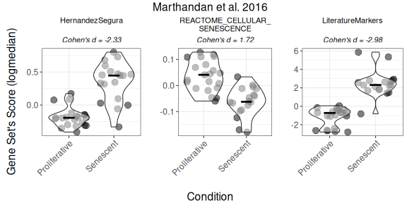
Next, we calculate scores using all available methods (log2-median, ranking, and ssGSEA) to compare results across scoring strategies. The output includes heatmaps and volcano plots to visualize differences between conditions. Heatmaps summarize scores across samples and gene sets, while volcano plots show effect sizes (|Cohen’s d|) versus statistical significance.
Overall_Scores <- PlotScores(data = counts_example,
metadata = metadata_example,
gene_sets=genesets_example,
Variable="Condition",
method ="all",
ncol = NULL,
nrow = 1,
widthTitle=30,
limits = c(0,3.5),
title="Marthandan et al. 2016",
titlesize = 10,
ColorValues = list(heatmap=c("#F9F4AE", "#B44141"),
volcano=signature_colors <- c(
HernandezSegura = "#A07395",
REACTOME_CELLULAR_SENESCENCE = "#6B8E9E",
LiteratureMarkers = "#CA7E45"
)
),
mode="simple",
widthlegend=30,
sig_threshold=0.05,
cohen_threshold=0.6,
pointSize=6,
colorPalette="Paired")
Overall_Scores$heatmap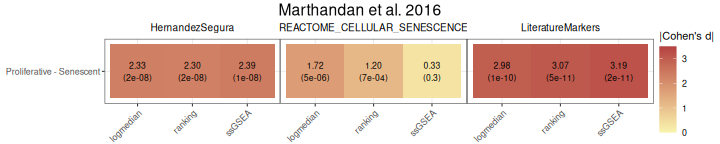
Overall_Scores$volcano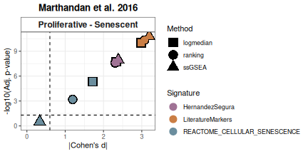
ROC curves evaluate the discriminatory power of gene set scores, providing insight into how well a signature distinguishes between experimental or clinical groups.
ROC_Scores(data = counts_example,
metadata = metadata_example,
gene_sets=genesets_example,
method = "all",
variable ="Condition",
colors = c(logmedian = "#3E5587", ssGSEA = "#B65285", ranking = "#B68C52"),
grid = TRUE,
spacing_annotation=0.3,
ncol=NULL,
nrow=1,
mode = "simple",
widthTitle = 28,
titlesize = 10,
title="Marthandan et al. 2016") 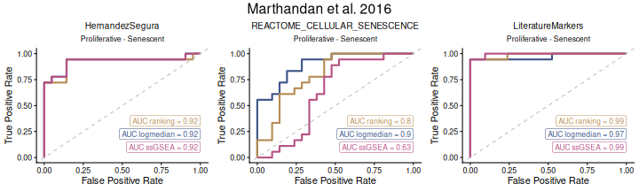
Finally, we perform simulations using random gene sets to estimate the false positive rate. This step ensures that observed gene set signals exceed what would be expected by chance, improving confidence in the results.
FPR_Simulation(data = counts_example,
metadata = metadata_example,
original_signatures = genesets_example,
gene_list = row.names(counts_example),
number_of_sims = 10,
title = "Marthandan et al. 2016",
widthTitle = 30,
Variable = "Condition",
titlesize = 12,
pointSize = 5,
labsize = 10,
mode = "simple",
ColorValues=NULL,
ncol=NULL,
nrow=1 ) 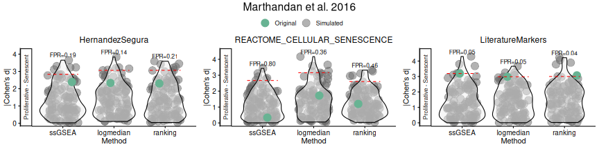
Enrichment-based approach
We now shift focus to enrichment-based methods, which rely on differential expression statistics to evaluate whether gene sets show coordinated changes between conditions. This approach complements score-based methods by explicitly leveraging contrasts between groups and quantifying statistical significance.
The first step is to compute differential expression. In this
example, we build the design matrix automatically from the
Condition variable in the metadata and define the contrast
Senescent - Proliferative. Internally, this fits a linear
model without an intercept, enabling quick comparison between levels of
a categorical variable.
# Build design matrix from variables (Condition) and apply a contrast.
# The design matrix is constructed automatically using the variable "Condition".
DEGs <- calculateDE(data = counts_example,
metadata = metadata_example,
variables = "Condition",
contrasts = c("Senescent - Proliferative"))
DEGs$`Senescent-Proliferative`[1:5,]## logFC AveExpr t P.Value adj.P.Val B
## CCND2 3.816674 4.406721 12.379571 2.944841e-15 2.349757e-12 24.64395
## MKI67 -3.581174 6.605339 -9.187514 2.110510e-11 4.769568e-10 15.91258
## PTCHD4 3.398914 3.556007 10.729126 2.461327e-13 2.868691e-11 20.30116
## KIF20A -3.365481 5.934893 -9.718104 4.406643e-12 1.771710e-10 17.45858
## CDC20 -3.304602 6.104079 -9.791031 3.562991e-12 1.592176e-10 17.66821Once differential expression is calculated, we can visualize the results with a volcano plot. This plot highlights genes in our predefined gene sets, showing the magnitude of differential expression (log fold-change) versus statistical significance (adjusted p-value). Up- (green) and downregulated (red) genes are color-coded to facilitate interpretation. Genes in blue represent those from gene sets without known direction.
# Change order: signatures in columns, contrast in rows
plotVolcano(DEGs, genes = genesets_example,
N = NULL,
x = "logFC", y = "-log10(adj.P.Val)", pointSize = 2,
color = "#6489B4", highlightcolor = "#05254A", highlightcolor_upreg = "#038C65", highlightcolor_downreg = "#8C0303",nointerestcolor = "#B7B7B7",
threshold_y = NULL, threshold_x = NULL,
xlab = NULL, ylab = NULL, ncol = NULL, nrow = NULL, title = "Marthandan et al. 2016",
labsize = 10, widthlabs = 24, invert = TRUE)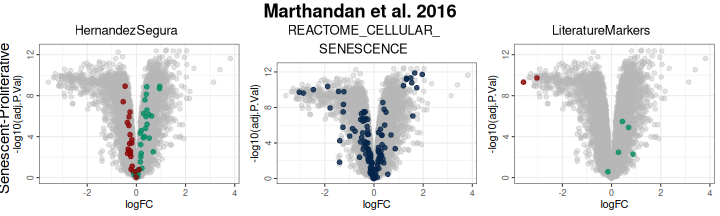
Next, we perform Gene Set Enrichment Analysis (GSEA) using the differential expression results. This approach evaluates whether members of each gene set are non-randomly distributed toward the top or bottom of the ranked gene list, providing normalized enrichment scores (NES) and adjusted p-values.
GSEAresults <- runGSEA(DEGList = DEGs,
gene_sets = genesets_example,
stat = NULL,
ContrastCorrection = FALSE)
GSEAresults## $`Senescent-Proliferative`
## pathway pval padj log2err ES
## <char> <num> <num> <num> <num>
## 1: HernandezSegura 4.875921e-10 1.462776e-09 0.8012156 0.6263553
## 2: REACTOME_CELLULAR_SENESCENCE 1.207999e-02 1.811999e-02 0.1317424 0.3687292
## 3: LiteratureMarkers 2.020412e-02 2.020412e-02 0.1461515 0.6948634
## NES size leadingEdge stat_used
## <num> <int> <list> <char>
## 1: 2.636116 52 CNTLN, D.... t
## 2: 1.446005 128 H1-2, H2.... B
## 3: 1.650282 7 LMNB1, M.... tTo visualize the enrichment of each gene set along the ranked gene
list, we use enrichment curves from fgsea. This plot shows
the running enrichment score across the ranked list of genes,
highlighting where gene set members are concentrated.
plotGSEAenrichment(GSEA_results=GSEAresults,
DEGList=DEGs,
gene_sets=genesets_example,
widthTitle=40, grid = TRUE, titlesize = 10, nrow=1, ncol=3) 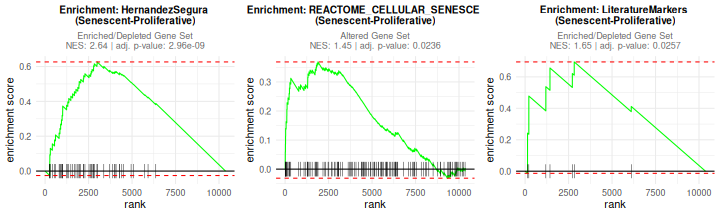
We can also summarize enrichment results in a lollipop plot, which compactly shows the normalized enrichment score and highlights statistically significant gene sets. This provides a quick overview of which pathways are most strongly altered.
plotNESlollipop(GSEA_results=GSEAresults,
saturation_value=NULL,
nonsignif_color = "#F4F4F4",
signif_color = "red",
sig_threshold = 0.05,
grid = FALSE,
nrow = NULL, ncol = NULL,
widthlabels=13,
title=NULL, titlesize=12) ## $`Senescent-Proliferative`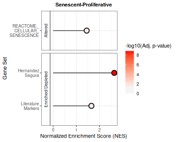
Finally, a volcano-style scatter plot combines NES and significance for all gene sets, making it easy to identify which sets show the strongest and most statistically robust enrichment or depletion.
plotCombinedGSEA(GSEAresults, sig_threshold = 0.05, PointSize=6, widthlegend = 26 )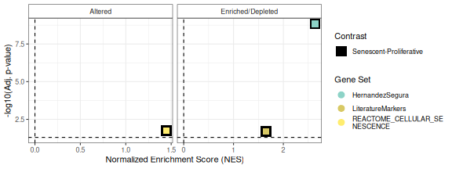
3.4.2 Discovery Mode
In Discovery Mode (full tutorial here), the output focuses on a single gene set:
- Score distributions by phenotype
- Pairwise contrasts (Cohen’s d) and overall effect sizes (Cohen’s f)
- Enrichment score summaries (NES) with adjusted p-values (e.g., lollipop plots)
We start by selecting the gene set of interest. Here, we use the HernandezSegura gene set from our example collection.
HernandezSegura_GeneSet <- list(HernandezSegura=genesets_example$HernandezSegura) For illustration, we add two hypothetical variables to the metadata:
DaysToSequencing, representing the number of days between
sample preparation and sequencing, and Researcher,
identifying the person who processed each sample. This allows us to
explore associations between gene set activity and different types of
variables (categorical or continuous).
data(metadata_example)
set.seed("123456")
metadata_example$Researcher <- sample(c("John","Ana","Francisca"),39, replace = TRUE)
metadata_example$DaysToSequencing <- sample(c(1:20),39, replace = TRUE)
head(metadata_example)## sampleID DatasetID CellType Condition SenescentType
## 252 SRR1660534 Marthandan2016 Fibroblast Senescent Telomere shortening
## 253 SRR1660535 Marthandan2016 Fibroblast Senescent Telomere shortening
## 254 SRR1660536 Marthandan2016 Fibroblast Senescent Telomere shortening
## 255 SRR1660537 Marthandan2016 Fibroblast Proliferative none
## 256 SRR1660538 Marthandan2016 Fibroblast Proliferative none
## 257 SRR1660539 Marthandan2016 Fibroblast Proliferative none
## Treatment Researcher DaysToSequencing
## 252 PD72 (Replicative senescence) Ana 6
## 253 PD72 (Replicative senescence) Ana 18
## 254 PD72 (Replicative senescence) John 19
## 255 young Ana 2
## 256 young Francisca 9
## 257 young John 10We can then examine how the selected gene set associates with these variables using enrichment-based approaches in Discovery Mode. The resulting plot highlights significant associations across variables and visually summarizes the direction and strength of the effect.
VariableAssociation(
data = counts_example,
metadata = metadata_example,
method = "GSEA",
cols = c("Condition","Researcher","DaysToSequencing"),
mode = "simple",
gene_set = HernandezSegura_GeneSet,
saturation_value = NULL,
nonsignif_color = "white",
signif_color = "red",
sig_threshold = 0.05,
widthlabels = 30,
labsize = 10,
titlesize = 14,
pointSize = 5
) 
## $plot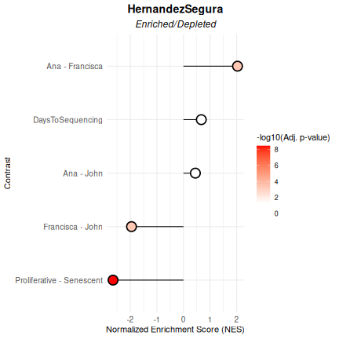
##
## $data
## pathway pval padj log2err ES NES
## <char> <num> <num> <num> <num> <num>
## 1: HernandezSegura 7.420457e-10 3.710228e-09 0.80121557 -0.6263553 -2.6486833
## 2: HernandezSegura 9.994967e-01 9.994967e-01 0.01188457 0.1127391 0.4471673
## 3: HernandezSegura 1.644800e-04 4.111999e-04 0.51884808 0.4544704 2.0326219
## 4: HernandezSegura 2.632307e-04 4.387178e-04 0.49849311 -0.4726426 -1.9550716
## 5: HernandezSegura 9.636917e-01 9.994967e-01 0.01516609 0.1677355 0.6709891
## size leadingEdge stat_used Contrast
## <int> <list> <char> <char>
## 1: 52 CNTLN, D.... t Proliferative - Senescent
## 2: 52 P4HA2, S.... t Ana - John
## 3: 52 NOL3, PL.... t Ana - Francisca
## 4: 52 MEIS1, S.... t Francisca - John
## 5: 52 BCL2L2, .... t DaysToSequencingNext, we evaluate the association using a score-based method (here, log2-median). This approach calculates per-sample scores for the gene set and summarizes them across variables. The “extensive” mode provides a comprehensive output including effect sizes for pairwise contrasts and overall statistics for continuous variables.
VariableAssociation(data = counts_example,
metadata = metadata_example,
method = "logmedian",
cols = c("Condition","Researcher","DaysToSequencing"),
gene_set = HernandezSegura_GeneSet,
mode="extensive",
nonsignif_color = "white", signif_color = "red", saturation_value=NULL,sig_threshold = 0.05,
widthlabels=30, labsize=10, titlesize=14, pointSize=5, discrete_colors=NULL,
continuous_color = "#8C6D03", color_palette = "Set2")$Overall 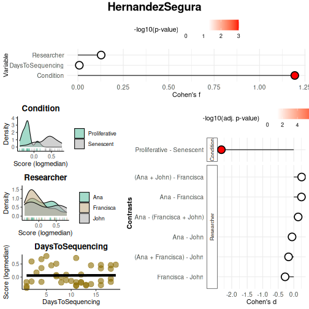
## Variable Cohen_f P_Value
## 1 Condition 1.19407625 1.267423e-08
## 2 Researcher 0.12816159 7.458318e-01
## 3 DaysToSequencing 0.00792836 9.617953e-01Benchmarking mode offers the most comprehensive set of features and allows users to seamlessly move from discovery to benchmarking mode once a variable of interest has been identified and further testing is required. The main difference from Discovery mode is that Benchmarking is designed to evaluate multiple gene sets simultaneously, whereas Discovery mode focuses on quantifying a single, robust gene set.
3.5. Individual Gene Exploration (Optional)
To better understand the contribution of individual genes within a
gene set and identify whether specific genes drive the overall signal,
markeR offers a suite of gene-level exploratory analyses
(via VisualiseIndividualGenes), including:
- Expression heatmaps of genes across samples and groups
- Violin plots showing expression distributions of individual genes
- Correlation heatmaps to reveal co-expression patterns among genes in the set
- ROC curves and AUC values for individual genes to evaluate their discriminatory power
- Effect size calculations (Cohen’s d) per gene to quantify differential expression
- Principal Component Analysis (PCA) on gene set genes to assess variance explained and sample clustering
See ?VisualiseIndividualGenes for more details on the
available options and the extended online tutorial here.
3.6. Compare with Reference Gene Sets (Optional)
markeR allows comparison of user-defined gene sets to
reference sets (e.g., from MSigDB) using:
Jaccard Index: Measures gene overlap relative to union size.
Log Odds Ratio (logOR): Computes enrichment using a user-defined gene universe and Fisher’s exact test.
Filters can be applied based on similarity thresholds (e.g., minimum Jaccard, OR, or p-value).
Example of Gene Set Similarity (full tutorial here)::
# Example data
signature1 <- c("TP53", "BRCA1", "MYC", "EGFR", "CDK2")
signature2 <- c("ATXN2", "FUS", "MTOR", "CASP3")
signature_list <- list(
"User_Apoptosis" = c("TP53", "CASP3", "BAX"),
"User_CellCycle" = c("CDK2", "CDK4", "CCNB1", "MYC"),
"User_DNARepair" = c("BRCA1", "RAD51", "ATM"),
"User_MTOR" = c("MTOR", "AKT1", "RPS6KB1")
)
geneset_similarity(
signatures = list(Sig1 = signature1, Sig2 = signature2),
other_user_signatures = signature_list,
collection = "C2",
subcollection = "CP:KEGG_LEGACY",
metric = "odds_ratio",
# Define gene universe (e.g., genes from HPA or your dataset)
universe = unique(c(
signature1, signature2,
unlist(signature_list),
msigdbr::msigdbr(species = "Homo sapiens", category = "C2")$gene_symbol
)),
or_threshold = 100, #log10OR = 2
pval_threshold = 0.05,
width_text=50
)$plot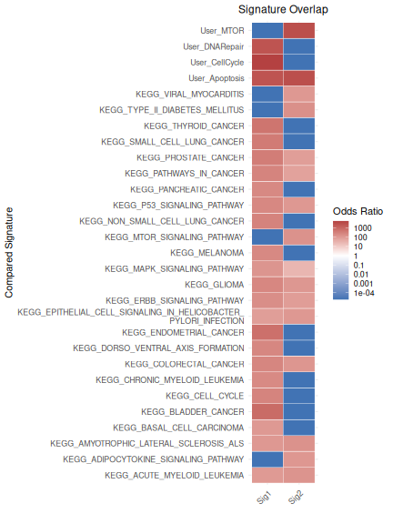
6. Session Information
## R version 4.5.1 (2025-06-13)
## Platform: x86_64-pc-linux-gnu
## Running under: Ubuntu 24.04.2 LTS
##
## Matrix products: default
## BLAS: /usr/lib/x86_64-linux-gnu/openblas-pthread/libblas.so.3
## LAPACK: /usr/lib/x86_64-linux-gnu/openblas-pthread/libopenblasp-r0.3.26.so; LAPACK version 3.12.0
##
## locale:
## [1] LC_CTYPE=C.UTF-8 LC_NUMERIC=C LC_TIME=C.UTF-8
## [4] LC_COLLATE=C.UTF-8 LC_MONETARY=C.UTF-8 LC_MESSAGES=C.UTF-8
## [7] LC_PAPER=C.UTF-8 LC_NAME=C LC_ADDRESS=C
## [10] LC_TELEPHONE=C LC_MEASUREMENT=C.UTF-8 LC_IDENTIFICATION=C
##
## time zone: UTC
## tzcode source: system (glibc)
##
## attached base packages:
## [1] stats graphics grDevices utils datasets methods base
##
## other attached packages:
## [1] markeR_0.99.3
##
## loaded via a namespace (and not attached):
## [1] pROC_1.19.0.1 gridExtra_2.3 rlang_1.1.6
## [4] magrittr_2.0.3 clue_0.3-66 GetoptLong_1.0.5
## [7] msigdbr_25.1.1 matrixStats_1.5.0 compiler_4.5.1
## [10] mgcv_1.9-3 png_0.1-8 systemfonts_1.2.3
## [13] vctrs_0.6.5 reshape2_1.4.4 stringr_1.5.1
## [16] pkgconfig_2.0.3 shape_1.4.6.1 crayon_1.5.3
## [19] fastmap_1.2.0 backports_1.5.0 labeling_0.4.3
## [22] effectsize_1.0.1 rmarkdown_2.29 ragg_1.4.0
## [25] purrr_1.1.0 xfun_0.53 cachem_1.1.0
## [28] jsonlite_2.0.0 BiocParallel_1.42.1 broom_1.0.9
## [31] parallel_4.5.1 cluster_2.1.8.1 R6_2.6.1
## [34] bslib_0.9.0 stringi_1.8.7 RColorBrewer_1.1-3
## [37] limma_3.64.3 car_3.1-3 jquerylib_0.1.4
## [40] Rcpp_1.1.0 assertthat_0.2.1 iterators_1.0.14
## [43] knitr_1.50 parameters_0.27.0 IRanges_2.42.0
## [46] splines_4.5.1 Matrix_1.7-3 tidyselect_1.2.1
## [49] abind_1.4-8 yaml_2.3.10 doParallel_1.0.17
## [52] codetools_0.2-20 curl_6.4.0 lattice_0.22-7
## [55] tibble_3.3.0 plyr_1.8.9 withr_3.0.2
## [58] bayestestR_0.16.1 evaluate_1.0.4 desc_1.4.3
## [61] circlize_0.4.16 pillar_1.11.0 ggpubr_0.6.1
## [64] carData_3.0-5 foreach_1.5.2 stats4_4.5.1
## [67] insight_1.4.0 generics_0.1.4 S4Vectors_0.46.0
## [70] ggplot2_3.5.2 scales_1.4.0 glue_1.8.0
## [73] tools_4.5.1 data.table_1.17.8 fgsea_1.34.2
## [76] locfit_1.5-9.12 ggsignif_0.6.4 babelgene_22.9
## [79] fs_1.6.6 fastmatch_1.1-6 cowplot_1.2.0
## [82] grid_4.5.1 tidyr_1.3.1 datawizard_1.2.0
## [85] edgeR_4.6.3 colorspace_2.1-1 nlme_3.1-168
## [88] Formula_1.2-5 cli_3.6.5 textshaping_1.0.1
## [91] ComplexHeatmap_2.24.1 dplyr_1.1.4 gtable_0.3.6
## [94] ggh4x_0.3.1 rstatix_0.7.2 sass_0.4.10
## [97] digest_0.6.37 BiocGenerics_0.54.0 ggrepel_0.9.6
## [100] rjson_0.2.23 htmlwidgets_1.6.4 farver_2.1.2
## [103] htmltools_0.5.8.1 pkgdown_2.1.3 lifecycle_1.0.4
## [106] GlobalOptions_0.1.2 statmod_1.5.0